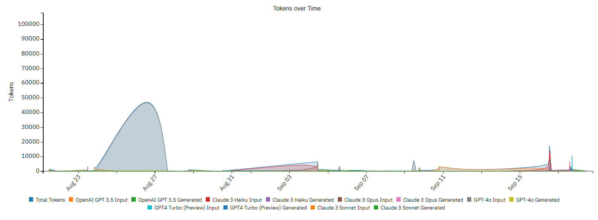

Métricas de governanza
Descripción general
Este documento describe las métricas individuales de la pestaña de Gobernanza. Utiliza esto como referencia para cada métrica y lo que significa para tus datos.
Nota
Todos los valores proporcionados tienen fines ilustrativos únicamente.
Buscar Gobernanza
Información semántica

Confianza semántica
Descripción: Esta sección habla del nivel de confianza en la comprensión de las consultas de manera semántica. Indica la confianza semántica más baja, promedio y más alta de las respuestas en toda la instancia, proporcionando una idea de qué tan bien el sistema capta el significado de las preguntas formuladas.
- Valores:
- Mín: 0.0% - Esto representa el nivel más bajo de confianza que ha mostrado el sistema.
- Promedio: 32.0% - Este es el nivel de confianza típico en todas las consultas.
- Máx: 100.0% - Esto indica el nivel de confianza más alto alcanzado.
Frase fuente más larga en la respuesta
Descripción: Esta información refleja la frase o cita textual más pequeña, promedio y más grande del material de documentación fuente que se ha incluido en las respuestas. Muestra cuánta cita textual directa del material fuente se usa en las respuestas.
- Valores:
- Mín: 10 - La frase más corta tomada directamente de la fuente.
- Promedio: 146 - La longitud típica de las frases citadas.
- Máx: 445 - La frase más larga incluida en una respuesta.
Cobertura de la fuente principal
Descripción: Esto muestra el porcentaje de cobertura de documentación del documento principal para cada consulta. Indica con qué frecuencia se utiliza el documento fuente clasificado en primer lugar para generar la respuesta.
- Valores:
- Mín: 0.0% - Instancias en las que no se utilizó la fuente principal.
- Promedio: 50.0% - En promedio, con qué frecuencia se utiliza la fuente principal.
- Máx: 100.0% - Dependencia total de la fuente principal para generar respuestas.
Cobertura total
Descripción: Esto describe el porcentaje de cobertura general de todas las fuentes utilizadas para generar las respuestas. Resalta qué tan diversas son las fuentes que contribuyen a la respuesta final.
- Valores:
- Mín: 0.0% - Escenarios en los que no se utilizaron fuentes.
- Promedio: No especificado - La cobertura típica en todas las consultas.
- Máx: 100.0% - Utilización completa de las fuentes disponibles.
Longitud total de la respuesta
Descripción: Esta información mide la longitud total de las respuestas proporcionadas, indicando las longitudes más pequeña, promedio y más grande. Ayuda a comprender la verbosidad de las respuestas.
- Valores:
- Mín: 56 - La longitud de respuesta más corta.
- Promedio: No especificado - La longitud de respuesta típica.
- Máx: 771 - La longitud de respuesta más larga.
Desviación estándar de la fuente de respuesta
Descripción: Esto muestra la variabilidad en el número de fuentes utilizadas para generar respuestas, representada por la desviación estándar. Indica qué tan consistentemente se utiliza el mismo número de fuentes en diferentes respuestas.
- Valores:
- Mín: 0 - Sin variación en el número de fuentes.
- Promedio: 97 - Variabilidad típica en el uso de fuentes.
- Máx: 204 - Mayor variabilidad en el número de fuentes utilizadas.
Saltos de fuente de respuesta
Descripción: Esto mide la cantidad de veces que la fuente de información cambia durante la generación de una respuesta. Muestra el número más pequeño, promedio y más grande de saltos de fuente, lo que indica con qué frecuencia el sistema cambia entre diferentes fuentes.
- Valores:
- Mín: 0 - Sin saltos entre fuentes.
- Promedio: 19 - Número típico de saltos de fuente.
- Max: 28 - Número más alto de saltos entre fuentes.
Porcentaje de aciertos en caché
Descripción: Esto indica el porcentaje de veces que las respuestas se recuperaron de la caché, se editaron o no se encontraron en la caché. Resalta la eficiencia del mecanismo de almacenamiento en caché para proporcionar respuestas rápidas.
- Valores:
- Mín: 0.0% - Instancias donde no se utilizó la caché.
- En caché: 100.0% - Dependencia total de las respuestas almacenadas en caché.
- Editado: No especificado - Frecuencia de respuestas en caché editadas.
- Sin caché: No especificado - Frecuencia de respuestas no recuperadas de la caché.
Principales términos alucinados

Descripción: Este gráfico circular identifica los términos más frecuentemente alucinados por el modelo. La alucinación en este contexto se refiere a los términos generados por el modelo que no estaban presentes en el material de origen. El gráfico se divide en tres categorías.
- Categorías:
- NeuralSeeks Flex: 33.3% - Términos relacionados con NeuralSeeks Flex.
- Leverage: 33.3% - Términos relacionados con el aprovechamiento de la información.
- Modelo de lenguaje: 33.3% - Términos generados por el modelo de lenguaje.
Si un usuario hace clic en uno de los nombres de los términos alucinados a la derecha del gráfico circular, aparecerá una ventana emergente preguntando si el usuario quiere incluirlo en la lista de permitidos. Esto agregará el término a la biblioteca de la instancia y lo eliminará de la lista de términos alucinados.

Después de permitir el término, puede ir a la pestaña Configurar y revisar la configuración de Ajuste del modelo semántico en Puntuación semántica, y ver cómo se ha agregado el término permitido a la lista de frases que se pueden usar sin penalización, con respecto a las puntuaciones de Coincidencia semántica.
 - Capacidades conversacionales de la documentación de NeuralSeek: No especificado
- Características avanzadas de la documentación de NeuralSeek: No especificado
- Configuración de ElasticSearch para la búsqueda vectorial de la documentación de NeuralSeek: No especificado
- Interfaz de usuario de NeuralSeek Documentación: No especificado
- Capacidades conversacionales de la documentación de NeuralSeek: No especificado
- Características avanzadas de la documentación de NeuralSeek: No especificado
- Configuración de ElasticSearch para la búsqueda vectorial de la documentación de NeuralSeek: No especificado
- Interfaz de usuario de NeuralSeek Documentación: No especificado
URLs más referenciados

Descripción: Este gráfico de sectores muestra las URLs de los documentos que se referencian con más frecuencia. Proporciona un desglose detallado de los recursos en línea más accedidos.
Calificaciones de los usuarios
Descripción: Este gráfico muestra las calificaciones promedio de los usuarios de la documentación. Ayuda a comprender la satisfacción de los usuarios con la calidad y utilidad de la documentación proporcionada.
- Valores:
- Calificación promedio del usuario: No especificado - La calificación típica dada por los usuarios.
Perspectivas de intención
Descripción general
Este documento proporciona una descripción general de las perspectivas de cobertura y confianza de NeuralSeek. Las perspectivas se visualizan mediante gráficos de distribución, cada uno que representa diferentes aspectos de la cobertura y la confianza de la intención durante un período de retrospección.
Perspectivas de cobertura
Descripción: Este gráfico muestra el porcentaje de cobertura para varias intenciones, ordenadas por frecuencia. Proporciona información sobre qué tan bien se cubren las diferentes intenciones por el sistema.
- Ejemplos:
- FAQ-neuralseek: Muestra una alta cobertura, lo que indica que las consultas relacionadas con NeuralSeek están bien respaldadas.
- FAQ-collection: Indica una baja cobertura, lo que refleja un apoyo débil para las consultas relacionadas con la colección.
Perspectivas de confianza

Descripción: Este gráfico muestra el nivel de confianza para varias intenciones, ordenadas por frecuencia. Proporciona información sobre la confianza del sistema para responder a las consultas relacionadas con diferentes intenciones.
- Ejemplos:
- FAQ-maistro: Muestra una confianza moderada, lo que refleja un nivel razonable de confianza para responder a las consultas relacionadas con Maistro.
- FAQ-collection: Muestra una buena confianza, lo que indica una fuerte confianza para abordar las consultas relacionadas con la colección.
- FAQ-industry: Demuestra una baja confianza, lo que sugiere cierta incertidumbre en el manejo de las consultas relacionadas con el enmascaramiento de PII.
Período de retrospección
Descripción: El control deslizante del período de retrospección permite analizar la cobertura y la confianza en función del período de tiempo reciente deseado.
Perspectivas de tokens
Descripción general
Este documento proporciona una descripción general de las perspectivas de tokens para NeuralSeek. Las perspectivas se visualizan mediante varios gráficos de medidor, gráficos de barras y gráficos de líneas, cada uno que representa diferentes aspectos del uso, el costo y el rendimiento de la generación de tokens.
Uso de tokens

Total de tokens
Descripción: Este gráfico muestra el número total de tokens procesados, incluidos tanto los tokens de entrada como los generados.
- Tokens de entrada: 21,174 - El número de tokens recibidos como entrada.
- Tokens generados: 209,637 - El número de tokens generados como salida.
- Total: 230,811 - La suma de los tokens de entrada y generados.
Costo total de tokens
Descripción: Este gráfico indica el costo total asociado con el procesamiento de tokens, incluidos tanto los tokens de entrada como los generados.
- Costo de tokens de entrada: $0.03 - El costo incurrido por procesar los tokens de entrada.
- Costo de tokens generados: $0.05 - El costo incurrido por procesar los tokens generados.
- Costo total: $0.08 - El costo total por procesar tanto los tokens de entrada como los generados.
Tokens de entrada por búsqueda
Descripción: Esta gráfica muestra el número de tokens de entrada utilizados por cada búsqueda, indicando el número mínimo, promedio y máximo de tokens.
- Mín: 2 - El número mínimo de tokens de entrada utilizados en una sola búsqueda.
- Promedio: 1,959 - El número promedio de tokens de entrada utilizados por búsqueda.
- Máx: 2,508 - El número máximo de tokens de entrada utilizados en una sola búsqueda.
Tokens generados por búsqueda
Descripción: Esta gráfica muestra el número de tokens generados por cada búsqueda, indicando el número mínimo, promedio y máximo de tokens.
- Mín: 23 - El número mínimo de tokens generados en una sola búsqueda.
- Promedio: 198 - El número promedio de tokens generados por búsqueda.
- Máx: 282 - El número máximo de tokens generados en una sola búsqueda.
Costo por 1,000 búsquedas
Descripción: Esta gráfica indica el costo asociado con cada 1,000 búsquedas.
- Mín: $0.00 - El costo mínimo por 1,000 búsquedas.
- Promedio: No especificado - El costo promedio por 1,000 búsquedas.
- Máx: No especificado - El costo máximo por 1,000 búsquedas.
Generación de tokens por segundo
Descripción: Esta gráfica muestra la tasa de generación de tokens por segundo, indicando las tasas mínima, promedio y máxima.
- Mín: 3 - La tasa mínima de generación de tokens por segundo.
- Promedio: 7 - La tasa promedio de generación de tokens por segundo.
- Máx: 41 - La tasa máxima de generación de tokens por segundo.
Información sobre el costo

Comparación de costos del modelo
Descripción: Este gráfico de barras compara los costos asociados con los diferentes modelos utilizados dentro de NeuralSeek. Compara fácilmente el costo de tu modelo seleccionado con otros modelos populares.
Uso de tokens a lo largo del tiempo
Tokens a lo largo del tiempo
Descripción: Esta gráfica de líneas muestra el total de tokens, tokens de entrada y tokens generados a lo largo de un período de tiempo.
Registros de búsqueda

{kind=link}
{kind=link}
{kind=link}
Descripción general
Esta función permite a los usuarios filtrar eficientemente el historial de registros por fecha, incluyendo el ID de sesión, las preguntas y las respuestas, para una experiencia más simplificada e informativa. Las opciones de filtrado eficientes mejoran la usabilidad del registro, proporcionando una experiencia simplificada. Esta funcionalidad es importante para la resolución de problemas, la comprensión del comportamiento de los usuarios y la toma de decisiones informadas para mejorar la eficiencia y la efectividad general de las funciones de Búsqueda y Chat dentro de NeuralSeek.
-
Fecha: La hora y fecha en que se registró la Búsqueda/Chat.
-
Sesión: El ID de sesión de la respuesta registrada.
-
Pregunta: La pregunta ingresada por el usuario.
-
Respuesta: La respuesta generada por NeuralSeek. Ahora puedes ver los filtros aplicados durante la búsqueda de consultas.
También puedes usar la función de Reproducción aquí, que te permite reproducir preguntas registradas anteriormente y analizar sus puntajes semánticos. Para más información, consulta Reproducción.
Gobernanza de mAIstro
Información del flujo

Tiempo por ejecución
Descripción: Esta gráfica muestra la cantidad de tiempo dedicado a una ejecución típica de mAIstro, medida en milisegundos.
Valores
- Mín: 0 - Representa la menor cantidad de tiempo dedicado a una ejecución.
- Promedio: 7291.7 - Representa la cantidad típica de tiempo dedicado a una ejecución.
- Máx: 131885 - Representa la mayor cantidad de tiempo dedicado a una ejecución.
Búsquedas equivalentes por ejecución
Descripción: Esta gráfica muestra la cantidad de búsquedas que se utilizarían para completar una plantilla de mAIstro.
Valores - Mín: 0.2 - Representa la cantidad mínima de búsquedas utilizadas en una ejecución. - Promedio: 0.4 - Representa la cantidad típica de búsquedas utilizadas en una ejecución. - Máx: 3 - Representa la mayor cantidad de búsquedas utilizadas en una ejecución.
Ejecuciones de plantilla
Descripción: Este gráfico circular muestra cuántas veces se ha ejecutado una plantilla mAIstro específica. Al pasar el cursor sobre ciertas rebanadas del gráfico, puede ver el nombre de la plantilla y el número de veces que se ha ejecutado.
Tiempo total promedio de los componentes por plantilla

Descripción: Este gráfico de radar muestra la cantidad de tiempo promedio que tarda cada componente de una plantilla en ejecutarse, en milisegundos. Al pasar el cursor sobre el nombre de un componente, puede ver el tiempo promedio en esa categoría específica.
{kind=link}
Tiempos de ejecución de la plantilla
{kind=link}
Descripción: Este gráfico muestra el rendimiento de diferentes plantillas mAIstro a lo largo del tiempo, medido en milisegundos.
Información de tokens
{kind=link}
Total de tokens
Descripción: Este gráfico muestra el número total de tokens procesados, incluidos los tokens de entrada y los generados.
- Tokens de entrada: 214,304 - El número de tokens recibidos como entrada.
- Tokens generados: 1,438,276 - El número de tokens generados como salida.
- Total: 1,653K - La suma de los tokens de entrada y generados.
Costo total de tokens
Descripción: Este gráfico indica el costo total asociado con el procesamiento de tokens, incluidos los tokens de entrada y los generados.
- Costo de tokens de entrada: $0.88 - El costo incurrido por procesar los tokens de entrada.
- Costo de tokens generados: $1.61 - El costo incurrido por procesar los tokens generados.
- Costo total: $2.49 - El costo total por procesar tanto los tokens de entrada como los generados.
Tokens de entrada por ejecución
Descripción: Este gráfico muestra el número de tokens de entrada utilizados por ejecución, indicando el número más pequeño, el promedio y el más grande.
- Mín: 5 - El número mínimo de tokens de entrada utilizados en una sola ejecución.
- Promedio: 2,610.3 - El número promedio de tokens de entrada utilizados por ejecución.
- Máx: 70,039 - El número máximo de tokens de entrada utilizados en una sola ejecución.
Tokens generados por ejecución
Descripción: Este gráfico muestra el número de tokens generados por ejecución, indicando el número más pequeño, el promedio y el más grande.
- Mín: 0 - El número mínimo de tokens generados en una sola ejecución.
- Promedio: 389 - El número promedio de tokens generados por ejecución.
- Máx: 4,032 - El número máximo de tokens generados en una sola ejecución.
Costo por 1,000 ejecuciones
Descripción: Este gráfico indica el costo asociado con cada 1,000 ejecuciones.
- Mín: $0.00 - El costo mínimo por 1,000 ejecuciones.
- Promedio: $15.17 - El costo promedio por 1,000 ejecuciones.
- Máx: $366.00 - El costo máximo por 1,000 ejecuciones.
Generación de tokens por segundo
Descripción: Este gráfico muestra la tasa de generación de tokens por segundo, indicando la más pequeña, la promedio y la más grande.
- Mín: 0.2 - La tasa mínima de generación de tokens por segundo.
- Promedio: 9.1 - La tasa promedio de generación de tokens por segundo.
- Máx: 333.3 - La tasa máxima de generación de tokens por segundo.
Comparación de costos del modelo

Descripción: Este gráfico de barras compara los costos asociados con los diferentes modelos utilizados dentro de NeuralSeek. Compara fácilmente el costo de tu modelo seleccionado con otros modelos populares.
Tokens a lo largo del tiempo
 Descripción: Este gráfico de líneas muestra el total de tokens, tokens de entrada y tokens generados a lo largo de un período de tiempo.
{kind=link}
Gobernanza del sistema
Rendimiento del sistema
Descripción general
Esto proporciona una descripción general de los insights de rendimiento de NeuralSeek. Los insights se visualizan mediante gráficos de líneas, cada uno que representa diferentes aspectos del rendimiento de la instancia y el universo a lo largo del tiempo.
Rendimiento de la instancia

Descripción: Este gráfico muestra el rendimiento de una sola instancia a lo largo del tiempo, medido en milisegundos. Ayuda a comprender el tiempo de respuesta y la eficiencia de la instancia.
Rendimiento del universo

Descripción: Este gráfico muestra el rendimiento de toda la región de instancias a lo largo del tiempo, medido en milisegundos.